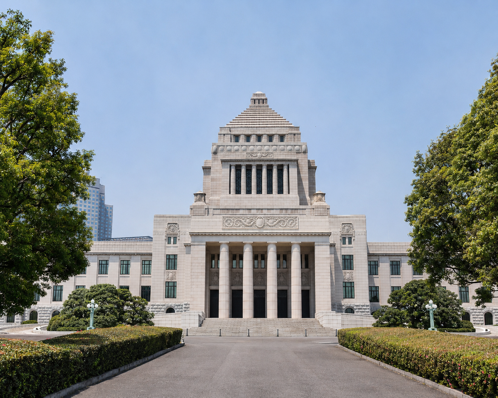

学校で教える内容は、多ければ多いほどいいのでしょうか。
社会が変われば、新しく学ぶ必要のあることも増えていきます。
情報、デジタル技術、探究、生成AI。
これからも学校に求められるものは増えていくでしょう。
でも僕は、新しい内容を増やす前に、今ある内容を本当に理解できているのかを考えるべきだと思っています。
たくさん習っても、数か月後にほとんど忘れている。
最後は時間がなくなって駆け足になる。
それなら、学習内容をさらに増やすことが本当に正しいのでしょうか。
次期学習指導要領では「余白」と「精選」が議論されている
2026年10月、文部科学省の中央教育審議会教育課程部会は「次期学習指導要領等に向けた審議まとめ」を公表しました。
次期学習指導要領はまだ確定していませんが、2028年度以降の順次実施に向けて議論が進められています。

僕が特に注目しているのが、授業時間の「余白」と学習内容の「精選」です。
審議まとめでは、社会科について内容の重複を整理することや、教科書の用語を精選する方向が示されています。
理科については、観察や実験を充実させるためにも「授業時間の余白」が必要だとして、学習内容の見直し・精選を進める方向が示されています。
僕は、この方向性には賛成です。
新しいものを入れるのであれば、今あるものを整理する。
これは当然のことだと思います。
「習った」と「できる」は違う
僕が生徒を指導していて、よく聞く言葉があります。
「学校で習いました」
でも、習ったことと、できることは同じではありません。
授業で一度説明を聞いた。
問題を一度解いた。
教科書を一度読んだ。
それだけで、数週間後、数か月後にも使えるとは限りません。
だから僕は、理解した内容を繰り返し使う時間が必要だと考えています。
実際、学習方法に関する研究レビューでも、時間を空けて学習する「分散学習」と、自分で思い出して答える「練習テスト」は、有効性の高い学習方法として評価されています。
一度説明して終わりではなく、
理解する。
問題を解く。
忘れる。
もう一度思い出す。
また問題を解く。
こうして初めて、知識は使えるものになっていきます。
中3の理科・社会を見ると、すでに限界を感じる
特に僕が気になるのが、中学3年生の理科と社会です。
9月から11月ごろの定期テストでは、試験範囲が非常に広くなる学校があります。
教科書100ページ前後。
ワーク50ページ以上。
僕が実際に生徒のテスト範囲を見てきた中では、こうした量も珍しくありません。
これだけの範囲を数週間で復習し、理解し、覚え、問題まで解ける状態にする。
簡単なことではありません。
そこで僕は疑問を感じます。
なぜ、最後にこれほど学習内容が集中するのでしょうか。
学校には、本来かなりの授業時間がある
中学校3年生では、社会も理科も年間140単位時間が標準です。
中学校の授業時数は、1単位時間を50分として計算します。
つまり標準時数で考えると、1教科あたり約117時間。
理科と社会を合わせれば、年間約233時間です。
これは決して少ない時間ではありません。
僕自身、塾で長く指導してきましたが、学校が終わった後に通う塾で、理科だけに年間140単位時間、社会にも140単位時間を確保するというのは現実的ではありません。
それでも塾では、
どこを説明するのか。
どこを生徒に解かせるのか。
何を宿題にするのか。
どう復習させるのか。
限られた時間の中で常に考えます。
もちろん、学校と塾では役割が違います。
学校の先生には授業以外にも、学級運営、行事、保護者対応など多くの仕事があります。
丁寧に授業をしている先生もたくさんいると思います。
それでも、これだけの授業時間が確保されている以上、
「時間が足りなかった」で終わらせず、授業の進め方そのものを研究する必要はあるのではないか。
僕はそう思っています。
「ここからは教科書を読んでおいて」でいいのか
実際、生徒からこんな話を聞くことがあります。
「最後は教科書を読んでおいてと言われました」
これは、一校や二校で聞いた話ではありません。
丁寧に進めていた結果、最後に時間がなくなる。
最後の単元だけ急いで進む。
あるいは、生徒自身で読んでおくことになる。
事情があることは理解できます。
でも、生徒からすれば、試験範囲であることに変わりはありません。
高校入試にも出題されます。
「年間の内容を最後まで扱った」ということと、
「生徒が理解できる状態まで教えた」ということは違います。
僕が問題だと思うのは、ここです。
しかも、最後に残りやすい単元が軽くない
さらに気になることがあります。
僕が生徒を見ている中で、最後まで残りやすいと感じる単元があります。
社会なら、公民の金融・経済。
理科なら、天体です。
そして、これらは高校入試で軽く扱われている単元ではありません。
兵庫県公立高校入試を見ると、2024年度の理科では「天体の動きと地球の自転・公転」から、星座、太陽の南中高度、オリオン座、黄道などが出題されました。
2025年度にも、太陽系の惑星や金星と地球の位置関係など、天体分野からまとまった出題があります。直近3年間では、2024年度と2025年度の2年で天体が出題されています。
社会の経済分野も同じです。
2024年度には市場経済。
2025年度には物価と賃金、自由貿易。
2026年度には現代の企業、日本の税制度、公開市場操作、キャッシュレス決済、契約と支払いなどが出題されています。
少なくとも兵庫県では、直近3年間すべてで経済に関係する内容が問われています。
もちろん、
「学校で最後に学ぶから入試に出やすい」
という因果関係が確認できたわけではありません。
重要な単元だから出題されているのかもしれません。
ただ、少なくとも言えるのは、
学校で最後に駆け足になりやすい単元だからといって、入試では軽視できない
ということです。
ここは、かなり考えるところがあります。
学習内容だけでなく、授業の進め方も見直してほしい
もう一つ、僕が必要だと思うのが授業方法の改善です。
僕は、元高校教員や現役の高校教員と話をする機会があります。
その中で、
「授業の進め方が何年もほとんど変わっていない先生もいる」
「新しい指導方法やICTが出てきても、以前と同じ授業を続けているケースがある」
という話を複数の学校関係者、元学校関係者から聞いています。
全国の学校でどの程度そうなのかを示すデータを、僕は持っていません。
ただ、複数の関係者から同じような話を聞く以上、授業方法を改善できる余地のある現場はあると思っています。
教育の内容を変えるのであれば、授業の方法も変えていく必要があります。
教師が最初から最後まで説明するのか。
生徒自身に考えさせるのか。
演習の時間をどこで入れるのか。
復習をどう設計するのか。
ICTをどこで使うのか。
授業の進め方には、まだ研究できることがあるはずです。
「得るは捨つるに似たり」
僕は、「得るは捨つるに似たり」という考え方が好きです。
何かを得ようとすれば、何かを手放さなければならない。
時間には限りがあります。
学校の授業時間も、生徒が勉強に使える時間も無限ではありません。
新しい内容を一つ入れれば、その分どこかの時間が減ります。
情報教育。
探究。
プログラミング。
金融教育。
生成AI。
どれも「これから必要だ」と言うことはできます。
でも、全部を今までの教育内容に上乗せすることはできません。
新しいものを入れるなら、今あるものを減らす。
これは避けて通れないと思います。
スポーツでも、一度教えて終わりにはしない
僕は長く柔道を指導してきました。
スポーツなら、繰り返すことの大切さは分かりやすいと思います。
一度技を説明して、
「教えたから、もうできるよね」
とはなりません。
何度も練習する。
失敗する。
修正する。
もう一度やる。
それを繰り返して、ようやく身につきます。
勉強も同じです。
一度説明した。
一度問題を解いた。
それだけでは十分ではありません。
だからこそ、学習内容を増やすことより、繰り返す時間を確保することを優先してほしいと思っています。
「どこまで進んだか」より「何ができるようになったか」
授業では、予定より進まないことがあります。
そんなときでも、僕は生徒が理解できていなければ戻ります。
もう一度説明します。
問題をもう一度解いてもらいます。
予定していたページまで進めないこともあります。
それでも構いません。
僕が重視しているのは、
今日、何ページ進んだかではなく、生徒が何をできるようになったかです。
学校教育でも、ここをもっと重視してほしいと思っています。
新しい学習内容を追加する。
学習指導要領を変える。
教科書を変える。
それだけでは教育は良くなりません。
今ある内容を整理する。
授業の進め方を研究する。
復習や演習の時間を確保する。
そして、生徒が理解できたかを見る。
このすべてが必要です。
次期学習指導要領で「余白」と「精選」が議論されている今だからこそ、
何を新しく教えるかだけでなく、何を減らし、何を確実に身につけてもらうのか。
そこまで考えてほしいと思います。
僕は、広く浅く一度ずつ触れる教育より、
学んだことが、本当にその子の力として残る教育の方がいい。
そう考えています。